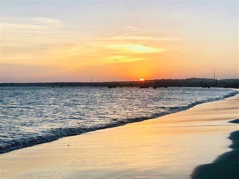
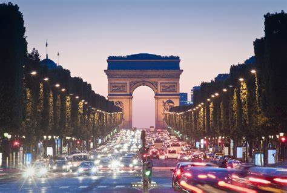
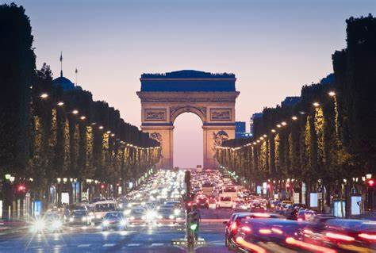
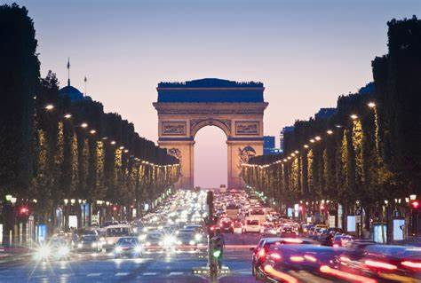

Below is a list of countries across the globe that i have traveled to.
Somalia
 Liido Beach, Mogadishu, Somalia.
In 2010, I visited the capital city of Somalia ; Mogadishu. I enjoyed the scenery of the Liido beach, alongside playing football everynight near my home. I ventured across interesting tourist attractions in the city and i would highly recommend. Some of the most iconic places in Somalia are:
Jazeera Beach
Shanghai Old City
Mogadishu Stadium
Liido beach
France

Eifell Tower, Paris, France.
On the last day of primary school, i had the opportunity to go on a trip to france, where i stayed in paris for three days. It was an immense experience and one which i enjoyed thorougly. Till this day i still have many souvinours from my trip, including a miniture eifell tower. Some of the most iconic places in France are:
Leaning Tower of Piza
Eiffel Tower
Louvre Museum
Arc De Triomphe
Turkey
Antalya, Turkey.
In 2018, I visited one of the many iconic citys in Turkey, Antalya. This was one of my favourite countries i have travelled to, the food and beaches there were fantastic. Some of the most iconic places in Turkey are:

 
